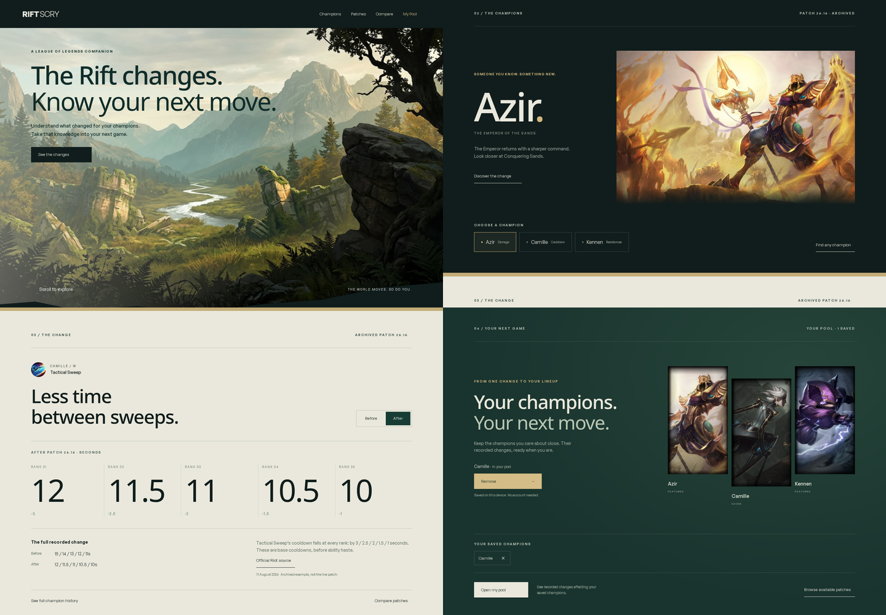
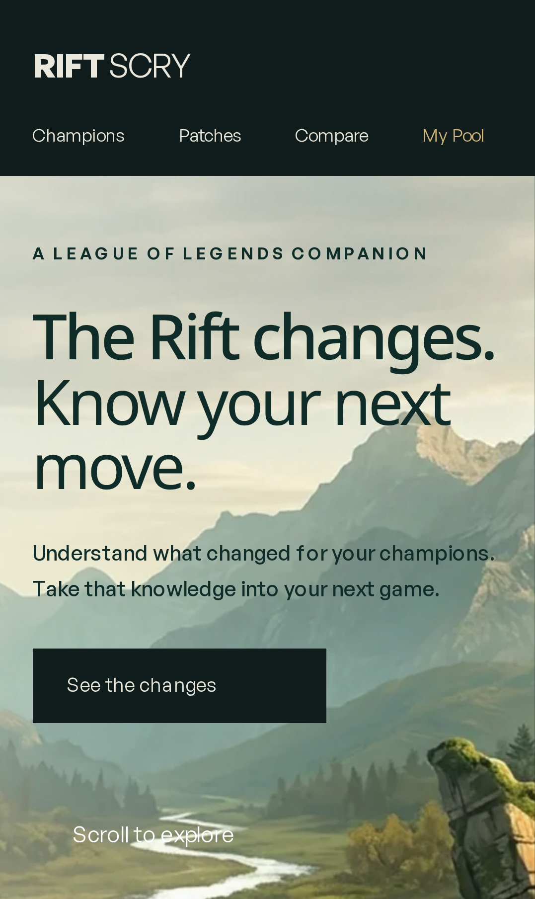
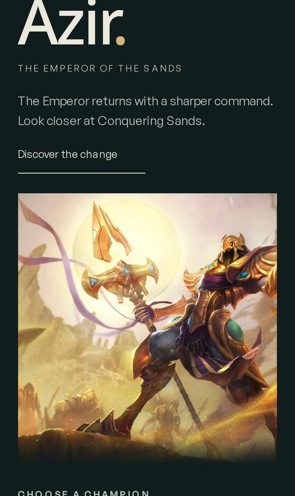
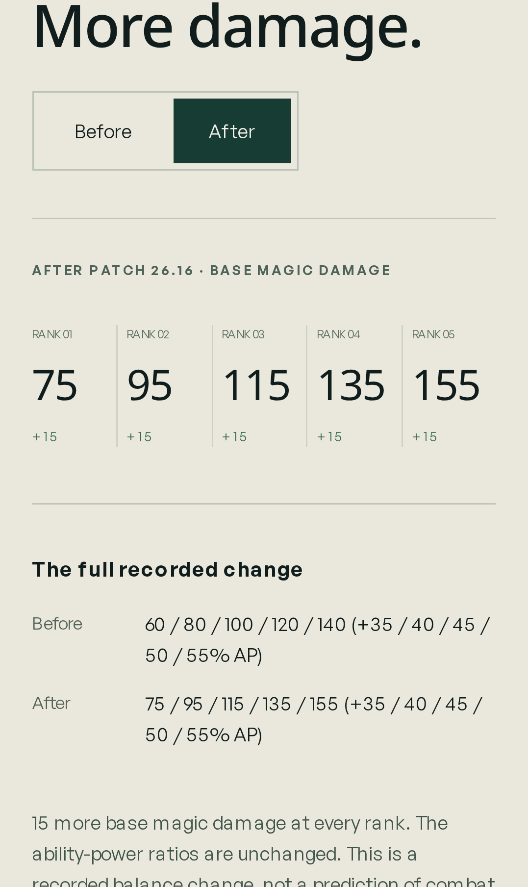
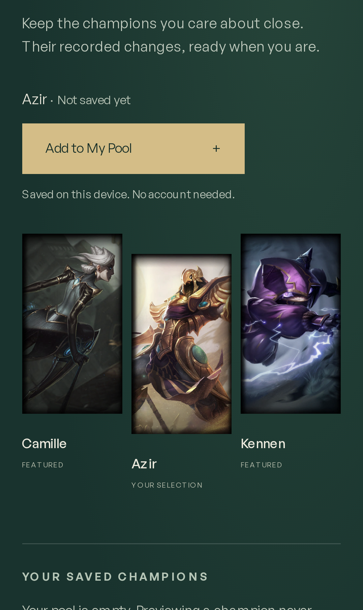

A journey through League.
Completed-scene screenshots and an unedited browser capture, recorded 26 October 2026. The capture uses native wheel scrolling, chooses Camille, switches Before/After, adds her to the real pool, and reloads to verify persistence.
Four completed compositions

Full-motion walkthrough
Download the original recording · Silent interaction recording; no spoken audio.
Portrait layouts




Full reduced-motion page screenshot

Validation
- Type-check: zero errors, warnings or hints.
- 187 unit tests passed, including exact featured values and existing pool, filters, search and comparison semantics.
- Production build: 452 routes generated.
- 10 desktop end-to-end tests passed. Three existing Windows-only visual-baseline tests skipped.
- Chromium phone emulation: touch champion selection, pool save/reload, no horizontal overflow, reduced-motion animation disabled.
- Desktop development-server lab capture: LCP 232 ms, CLS 0, p95 frame interval 16.8 ms. Phone-emulated LCP 120 ms, CLS 0. These local, unthrottled figures are not production or physical-device performance claims; INP was not measured.
- No browser runtime errors in the final recorded flow.
Unresolved external checks
WebKit could not start because required OS libraries are missing. Its dependency installer cannot run because apt-get is unavailable. The seven mobile WebKit tests remain blocked; Chromium phone emulation is separate evidence, not a substitute for Safari or a physical phone test.
Riot permits Data Dragon assets subject to its policies. The owner must confirm Developer Portal registration and audit for this product/update. No claim of individual Riot approval is made. The igloo.inc reference remained on its loading screen in this browser, so its live pacing could not be fully inspected.
Original generated environment; official unmodified Data Dragon champions; archived 26.16 values checked against Riot's source. No extracted models, copied cinematics, unofficial champion redesigns, or audio.